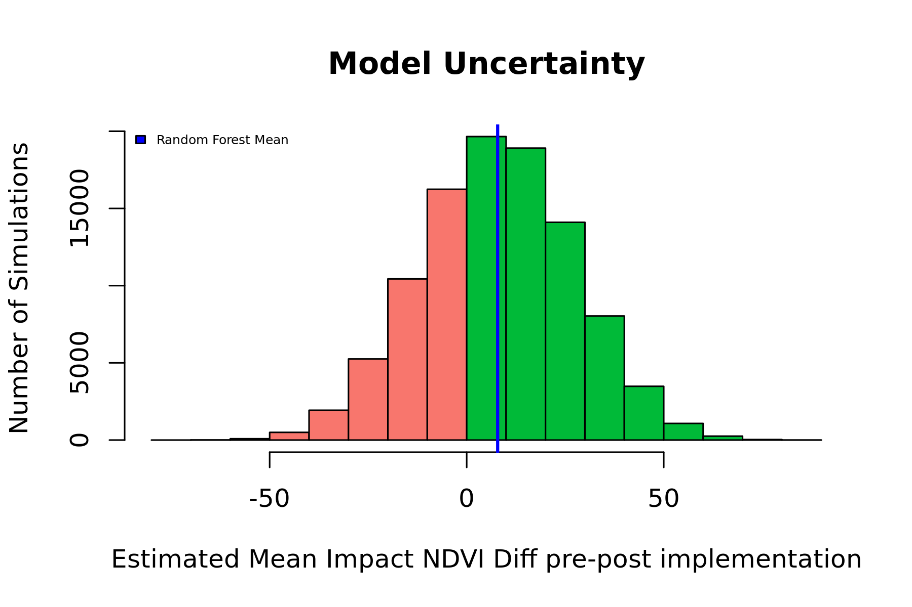
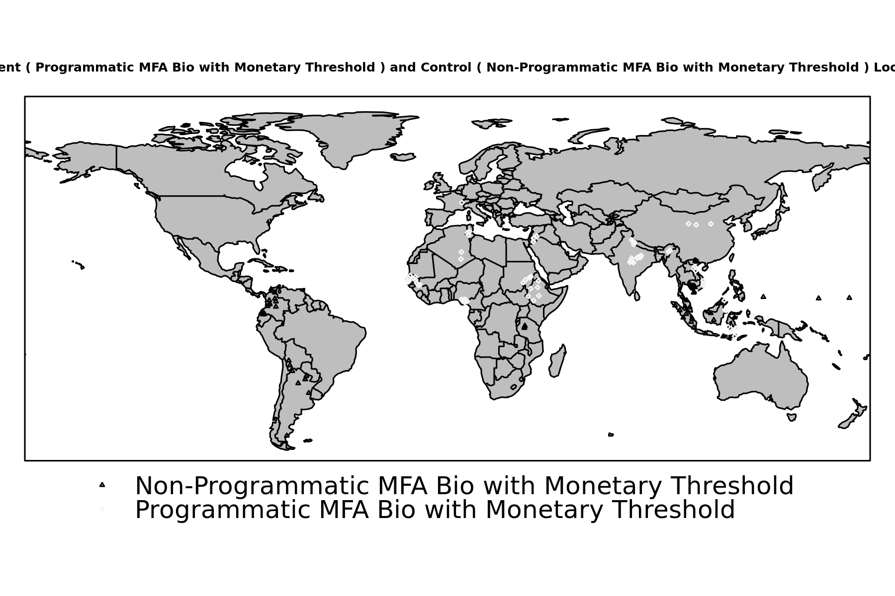
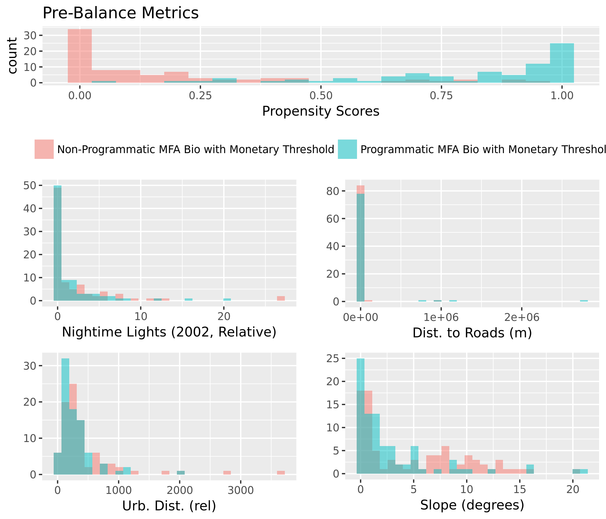
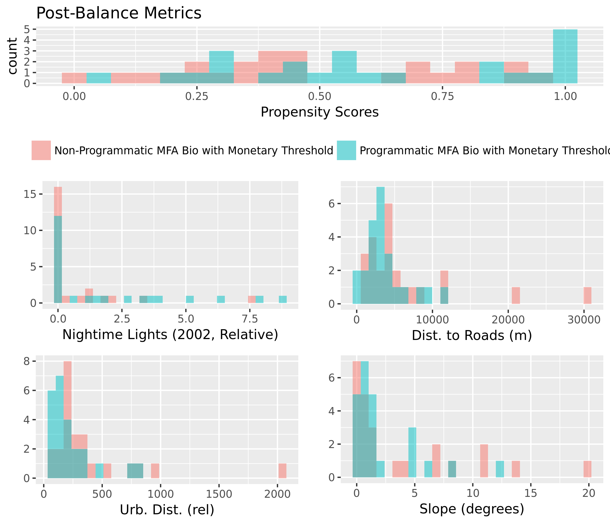
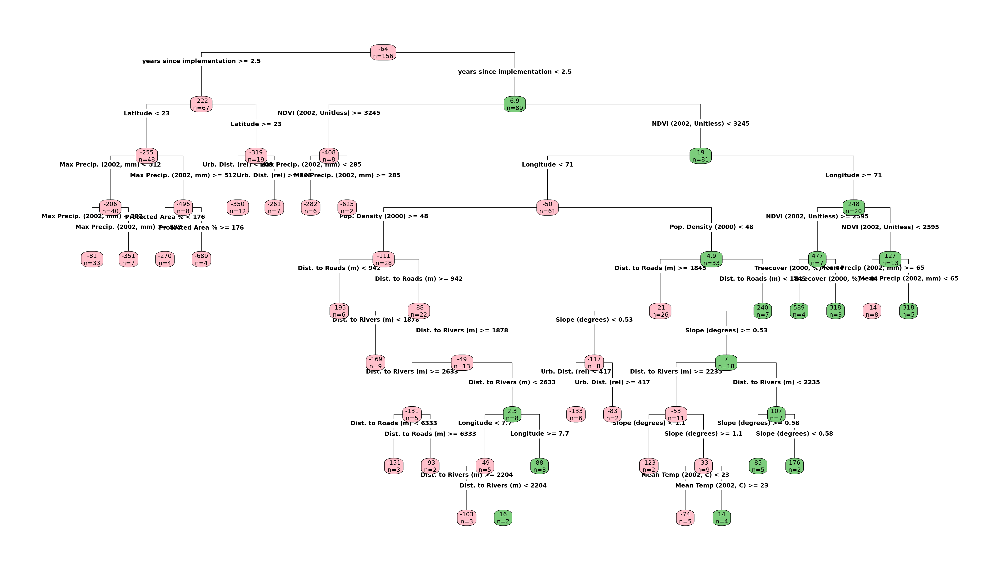
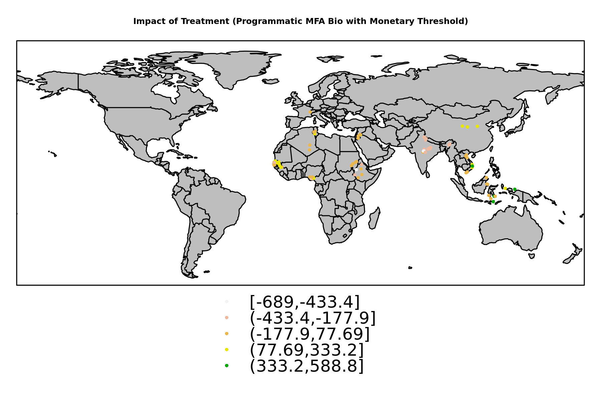

Contrast: Programmatic MFA Bio with Monetary Threshold (Treated), Non-Programmatic MFA Bio with Monetary Threshold (Control)
Treatment Cases:
86
Control Cases:
87

Figure 1. Mean Estimated Impacts from Causal Tree and Random Forest Estimation Strategies.
In this illustration, the blue vertical line is the global estimate of impact from the random forest.
The range of uncertainty is illustrated using a histogram, indicating the proportion of simulations which result in positive or negative estimates.
Specific confidence intervals can be calculated for this global estimate, or for individual project locations. A map of project location uncertainties is presented below.
Descriptive Statistics for Programmatic MFA Bio with Monetary Threshold (Treated) |
| Statistic | Mean | St. Dev. | Min | Median | Max |
|
| Dist. to Rivers (m) | 2,848.80 | 2,935.92 | 789.71 | 2,187.70 | 22,395.99 |
| Dist. to Roads (m) | 72,393.57 | 350,794.60 | 240.14 | 2,966.31 | 2,772,627.00 |
| Elevation (m) | 559.11 | 716.77 | 1.00 | 391.65 | 4,291.84 |
| Slope (degrees) | 2.98 | 4.36 | 0.00 | 1.32 | 21.05 |
| Urb. Dist. (rel) | 290.98 | 289.70 | 42.72 | 192.70 | 1,976.28 |
| Pop. Density (2000) | 142.36 | 169.63 | 0.24 | 83.93 | 908.90 |
| Protected Area % | 63.12 | 95.35 | 0.00 | 3.29 | 275.68 |
| Treecover (2000, %) | 17.36 | 23.31 | 0.00 | 6.00 | 94.05 |
| Latitude | 17.56 | 11.61 | -8.76 | 15.72 | 46.29 |
| Longitude | 55.41 | 47.53 | -16.95 | 77.87 | 135.91 |
| Max Precip. (2002, mm) | 284.97 | 172.66 | 9.64 | 300.12 | 631.60 |
| Min Precip (2002, mm) | 3.13 | 9.86 | 0.00 | 0.00 | 60.41 |
| Mean Precip (2002, mm) | 83.73 | 57.15 | 2.41 | 76.31 | 216.96 |
| Max Temp (2002, C) | 28.91 | 5.95 | 1.62 | 29.74 | 35.55 |
| Min Temp (2002, C) | 16.96 | 9.46 | -13.94 | 17.78 | 27.34 |
| Mean Temp (2002, C) | 23.24 | 6.65 | -5.06 | 25.38 | 30.59 |
| Nightime Lights (2002, Relative) | 1.73 | 3.45 | 0.00 | 0.11 | 20.78 |
| NDVI (2002, Unitless) | 2,140.36 | 838.18 | 594.45 | 2,258.82 | 3,590.06 |
| Programmatic MFA Bio with Monetary Threshold | 1.00 | 0.00 | 1 | 1 | 1 |
| NDVI Diff pre-post implementation | -92.72 | 164.67 | -583.75 | -58.07 | 264.65 |
|

Propensity Model: Programmatic MFA Bio with Monetary Threshold (Treated), Non-Programmatic MFA Bio with Monetary Threshold (Control) |
| Dependent variable: |
| |
| treatment |
|
| Dist. to Rivers (m) | 0.001 (-0.0002, 0.001) |
| Dist. to Roads (m) | 0.0000 (-0.0000, 0.0000) |
| Elevation (m) | 0.001 (-0.001, 0.002) |
| Slope (degrees) | -0.20 (-0.45, 0.04) |
| Urb. Dist. (rel) | 0.002** (0.0001, 0.004) |
| Pop. Density (2000) | 0.01** (0.001, 0.01) |
| Protected Area % | -0.004 (-0.01, 0.004) |
| Treecover (2000, %) | 0.01 (-0.02, 0.05) |
| Latitude | 0.16*** (0.05, 0.27) |
| Longitude | -0.02*** (-0.03, -0.01) |
| Max Precip. (2002, mm) | 0.02*** (0.01, 0.04) |
| Min Precip (2002, mm) | -0.03 (-0.09, 0.04) |
| Mean Precip (2002, mm) | -0.06*** (-0.09, -0.02) |
| Max Temp (2002, C) | 0.54 (-0.39, 1.47) |
| Min Temp (2002, C) | 0.30 (-0.44, 1.04) |
| Mean Temp (2002, C) | -0.71 (-2.36, 0.95) |
| Nightime Lights (2002, Relative) | -0.19 (-0.42, 0.05) |
| NDVI (2002, Unitless) | 0.001 (-0.001, 0.002) |
| Constant | -8.73** (-17.15, -0.30) |
|
| Observations | 162 |
| Akaike Inf. Crit. | 135.04 |
|
| Note: | *p<0.1; **p<0.05; ***p<0.01 |


Percent Balance Improvement: |
| Mean Diff. | eQQ Med | eQQ Mean | eQQ Max |
|
| Propensity Score | 80.100 | 83.149 | 80.292 | 77.501 |
| Dist. to Rivers (m) | -116.217 | -59.034 | -59.943 | 33.510 |
| Dist. to Roads (m) | 73.864 | -77.310 | 80.398 | 97.873 |
| Elevation (m) | 50.559 | -25.490 | 15.156 | -7.816 |
| Slope (degrees) | 14.543 | 61.537 | 13.856 | -30.211 |
| Urb. Dist. (rel) | -175.323 | -93.326 | -183.680 | -479.667 |
| Pop. Density (2000) | -1.187 | 2.634 | 5.027 | 23.791 |
| Protected Area % | 85.235 | -53.337 | 37.194 | 31.172 |
| Treecover (2000, %) | 72.762 | 80.538 | 64.643 | 39.359 |
| Latitude | 82.277 | 82.017 | 73.148 | 60.073 |
| Longitude | 84.556 | 39.065 | 20.000 | 21.898 |
| Max Precip. (2002, mm) | -1,068.029 | -56.067 | -42.425 | -24.072 |
| Min Precip (2002, mm) | 90.962 | 79.699 | 67.209 | 62.014 |
| Mean Precip (2002, mm) | 88.886 | 66.227 | 46.701 | -23.671 |
| Max Temp (2002, C) | 32.579 | 48.440 | 38.343 | -0.537 |
| Min Temp (2002, C) | 68.787 | -50.551 | -27.784 | -15.819 |
| Mean Temp (2002, C) | -73.114 | 39.910 | -7.570 | 24.705 |
| Nightime Lights (2002, Relative) | -154.715 | -546.208 | -210.540 | 23.760 |
| NDVI (2002, Unitless) | 38.006 | -29.605 | -12.570 | -1.062 |
|

Matched Model: Programmatic MFA Bio with Monetary Threshold (Treated), Non-Programmatic MFA Bio with Monetary Threshold (Control) |
| Dependent variable: |
| |
| NDVI Diff pre-post implementation |
|
| treatment | 0.04 (-0.33, 0.42) |
| Dist. to Rivers (m) | 0.02 (-0.46, 0.50) |
| Dist. to Roads (m) | -0.05 (-1.02, 0.91) |
| Elevation (m) | -0.93 (-2.35, 0.49) |
| Slope (degrees) | 0.29 (-0.85, 1.42) |
| Urb. Dist. (rel) | 0.40 (-0.87, 1.66) |
| Pop. Density (2000) | 0.24 (-0.30, 0.79) |
| Protected Area % | -0.55** (-0.94, -0.15) |
| Treecover (2000, %) | 0.20 (-0.44, 0.83) |
| Latitude | -0.52 (-1.85, 0.81) |
| Longitude | -0.15 (-0.87, 0.57) |
| Max Precip. (2002, mm) | 0.39 (-0.87, 1.65) |
| Min Precip (2002, mm) | 0.12 (-0.47, 0.71) |
| Mean Precip (2002, mm) | -0.57 (-1.87, 0.73) |
| Max Temp (2002, C) | 1.54 (-1.74, 4.82) |
| Min Temp (2002, C) | 1.45 (-2.41, 5.30) |
| Mean Temp (2002, C) | -2.96 (-9.04, 3.11) |
| Nightime Lights (2002, Relative) | -0.14 (-0.61, 0.34) |
| NDVI (2002, Unitless) | -0.14 (-0.68, 0.40) |
| Dist. to Roads (m) *Treatment | -0.04 (-0.77, 0.70) |
| Pop. Density (2000) *Treatment | -0.32 (-0.75, 0.10) |
| Longitude *Treatment | 0.35 (-0.30, 1.00) |
| Elevation (m) *Treatment | -0.08 (-0.99, 0.82) |
| Min Temp (2002, C) *Treatment | 0.38 (-0.22, 0.97) |
| Max Precip. (2002, mm) *Treatment | -0.76 (-2.07, 0.56) |
| Mean Precip (2002, mm) *Treatment | 0.34 (-1.01, 1.68) |
| Protected Area % *Treatment | -0.31 (-0.85, 0.22) |
| Constant | 0.09 (-0.30, 0.47) |
|
| Observations | 48 |
| R2 | 0.61 |
| Adjusted R2 | 0.09 |
|
| Note: | *p<0.1; **p<0.05; ***p<0.01 |
Standardized Beta Coefficients for Linear Model with Heterogeneous Effects
